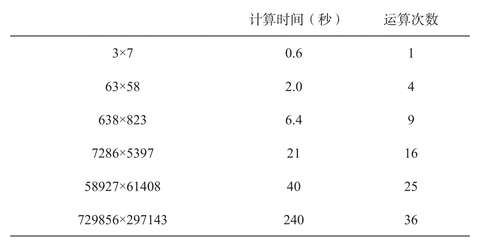

可以说，计算方面的才能并不是来自先天的禀赋，而是更多来自早期的训练，它伴随着一种非凡甚至病态的能力，即专注于狭窄的数字领域。这一结论与过去几个世纪里最伟大的两个天才的观点类似：托马斯·爱迪生认为“天才是1%的灵感加99%的汗水”，法国的自然主义者布丰（Buffon）则认为“天才只不过是更有耐心罢了”。
心理测量学的研究还没有发现任何速算导致的大脑基本参数的改变，这个事实同样支持了前面的论点。除了他们的专长，这些天才的信息加工速度均处于平均水平，甚至更慢。比如沙昆塔拉·德维（Shakuntala Devi），她是一位以惊人的计算速度出名的印度女性计算者。《吉尼斯世界纪录大全》承认她具有30秒计算出两个13位数字乘积的能力，尽管这一结果可能被夸大了。心理测量学家阿瑟·詹森（Arthur Jensen）过去一直拥护智力的生物决定论。他邀请德维到他的实验室，以测试她在某些经典实验中的表现。詹森在文章中无法掩饰其内心的失望32：在检测一次闪光，或在8个运动中选择其中一个时，她所花费的时间与平均时间相比，并没有任何出色之处。德维在“智力”测试“瑞文渐进矩阵”（Raven’s Progressive Matrices）中的成绩也处于平均水平。当她需要搜索一个视觉目标，或从记忆中搜寻一个数字时，她的反应都非常慢。借用计算机科学的隐喻，德维的计算特长显然不是因为她较快的整体内频，而只是由于她快如闪电的算术处理器。
在前一章，我们看到人们能够以较高的精确度预测正常被试做乘法所花费的时间。运算需要的元素越多、相关数字越大，计算就越慢。在这方面，计算天才跟一般人没有不同。一个世纪以前，比内测试了伊诺迪解决乘法问题所花费的时间33。下面是他的一些结果：

最右边的一栏是传统乘法运算中需要的基本运算次数。这个数量很好地预测了伊诺迪的计算时间，除了最复杂的乘法问题，因为最复杂的问题需要较大的记忆载荷而导致不成比例的慢。如果伊诺迪完成两个三位数的乘法的时间和计算两个一位数相乘差不多，这将是非同寻常的。因为它表明伊诺迪使用的是完全不同的算法，它可能允许同时执行多个操作。但事实并非如此，其他我知道的数学天才也都做不到。杰出的计算者在进行计算时像我们这些人一样，付出了很多努力。
另一个特征可能代表着天生的才能：大多数速算者表现出的非凡记忆力。对于比内来说，这个问题完全不需要讨论：
依我看，记忆是计算天才的必备特征。他们因为记忆力而独特并无限地超越了其他人。
比内将计算天才分为两类：一类是视觉计算者，他们记忆书面数字和计算的心理图像；一类是听觉计算者，比如伊诺迪，比内称他们通过在头脑中重复背诵来记忆数字。也许我们应该增加第三类：触觉计算者。因为至少有一个盲人速算者——路易斯·弗勒里（Louis Fleury），他声称自己操作数字的方式就像他正在使用的盲人触摸数字符号。然而，不管计算天才采取哪种记忆方式，他们的记忆广度往往大得惊人。例如，伊诺迪能将听到的36个只重复了一次的随机数字完全正确地复述出来。在常规表演结束后，他还能完全正确地复述出整个表演过程中观众呈现给他的全部300多个数字。
毫无疑问，伊诺迪的记忆广度达到了惊人的程度，但这是否意味着他的这种能力是天生的？除了无数真实性经常受到质疑的轶事，我们对这些天才的童年知之甚少。然而，没有什么能证明他们在幼时就已经拥有惊人的记忆能力。在我看来，他们非凡的记忆很有可能是多年训练的结果，他们对数字非常熟悉也是优势。
史蒂文·史密斯仔细研究了很多计算天才的生活，得出了相同的结论34：“心算者像其他普通人一样受到短时记忆的限制。不同之处在于，他们有能力在记忆中将一组数字当作单个项目进行处理。”
的确，记忆广度不是一个一成不变的生物参数，不像血型那样可以独立于所有的文化因素被测量。根据所储存项目的意义不同，记忆广度也会发生很大的变化。我可以轻松记住一句由15个法语单词组成的句子，因为法语是我的母语，它的意义有利于我记忆。但是，因为不理解汉语，记忆汉语时，我的记忆广度下降到大约7个音节。同样的道理，计算天才能够记忆大量数字，是因为数字几乎算是他们的母语，所有数字组合对他们来讲都有意义。在哈代的记忆中，出租车牌号“1792”可能被理解为4个独立的数字，因为它们看起来像是随机的。但是对于拉马努扬来说，“1792”是一个童年时的朋友，一个熟悉的特征，它只占用了他记忆中的一个细胞。我认为，计算天才对数字的熟悉度就足以解释他们为何拥有巨大的记忆广度，无须再考虑数字记忆是不是一种生物“天赋”。